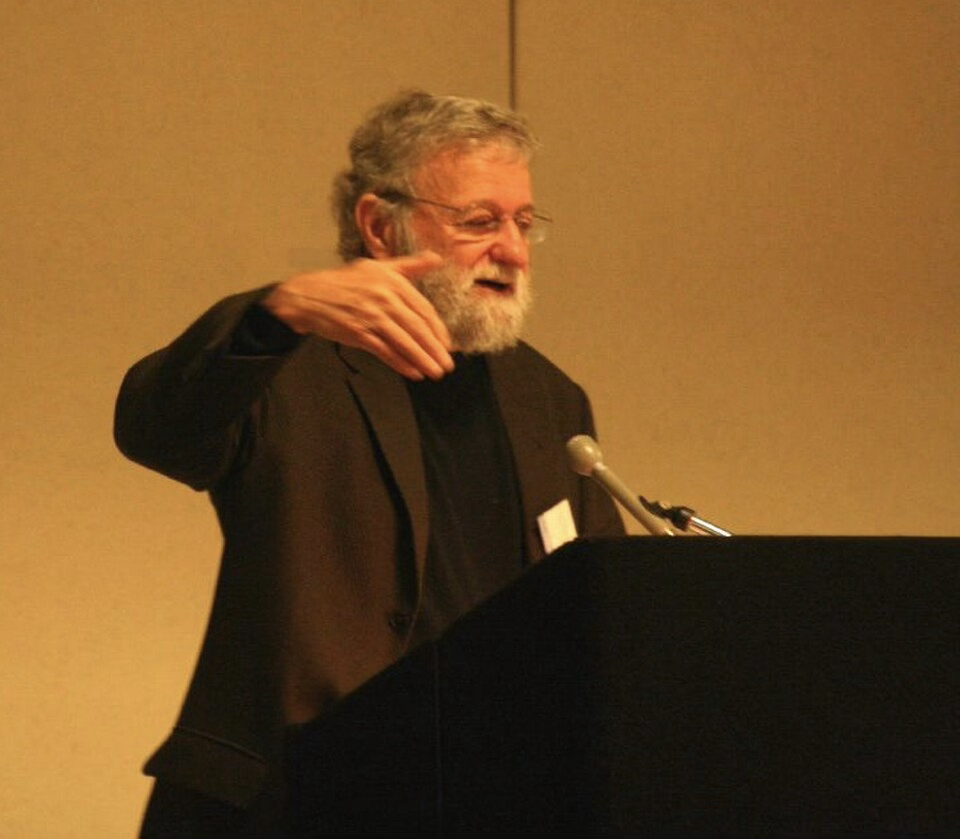
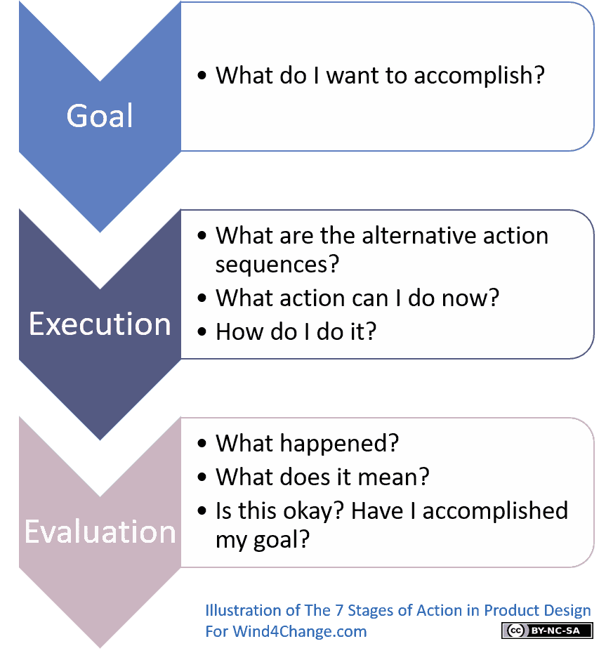
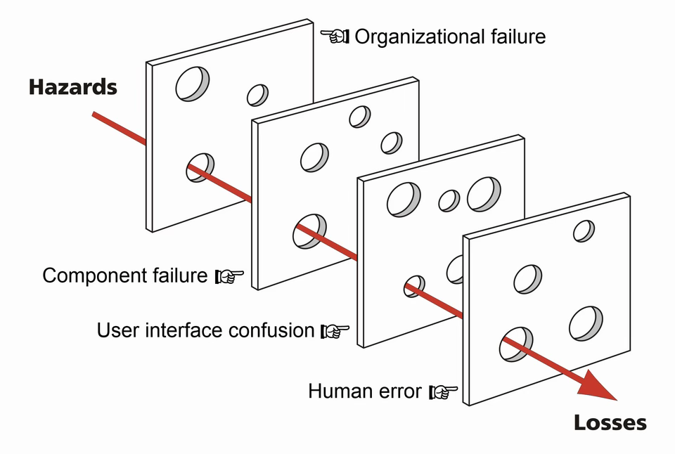

When an individual interacts with any technological system—from a simple wristwatch or microwave to a commercial airliner or nuclear reactor—they face two fundamental cognitive hurdles: figuring out how to operate the system, and determining what happened as a result of their actions. In human-computer interaction theory, these challenges are formally recognized as the Gulf of Execution and the Gulf of Evaluation. Introduced in 1986 by Ed Hutchins, Jim Hollan, and Don Norman, and later popularized in Norman’s seminal work The Design of Everyday Things, these two gulfs describe the cognitive gap between internal human goals and the physical reality of system controls and displays.

When interface elements fail to bridge these gulfs, user experience suffers. In low-stakes consumer software, this manifests as user frustration and lost productivity. In safety-critical industrial, medical, and military systems, a failure to bridge these gulfs can lead directly to catastrophic loss of life and financial ruin.
The Seven Stages of Action and the Two UX Gulfs
Don Norman conceptualized human-computer interaction as a continuous, cyclical process known as the Seven Stages of Action Model. To accomplish any task, a user moves through a bridge of execution from goal to action, and then through a bridge of evaluation from system state back to goal assessment:
- Formulating the Goal: Defining what is to be achieved.
- Forming the Intention: Deciding on the general approach to take
- Specifying the Action: Planning the specific sequence of physical actions.
- Executing the Actionb: Performing the physical manipulation of controls.
- Perceiving the System State: Observing the feedback displayed by the system.
- Interpreting the System State: Making sense of the visual, auditory, or tactile feedback.
- Evaluating the Outcome: Comparing the interpreted state with the original goal.

The Gulf of Execution
The Gulf of Execution represents the degree to which the interaction possibilities of an artifact correspond to the intentions of the user. It answers the user’s question: “How do I make the system do what I want?” A large Gulf of Execution occurs when the system fails to provide clear signifiers, affordances, physical constraints, or natural mappings that indicate what actions are possible and how they should be performed. If a user must exert substantial mental effort to translate their psychological goal (e.g., "mute the audio") into the system’s physical command sequence (e.g., navigating three sub-menus to locate a toggle), the interface imposes a heavy cognitive load.
The Gulf of Evaluation
The Gulf of Evaluation reflects the difficulty users experience when trying to assess the current state of the system and determine whether their expectations have been met. It answers the user’s question: “What state is the system in now, and did my action work?” The Gulf of Evaluation is small when the system provides feedback that is immediately perceptible, unambiguous, and formatted in a way that matches the user’s conceptual model. When feedback is hidden, delayed, deceptive, or presented in cryptic technical codes, the Gulf of Evaluation widens dramatically.
Classifying Human Performance: Slips vs. Mistakes
When human-system interaction breaks down, public investigations and corporate post-mortems frequently cite "human error" as the primary cause. However, cognitive scientists Donald Norman and James Reason demonstrated that human errors are rarely character flaws; rather, they are predictable cognitive outcomes resulting from flawed system design. Human errors fall into two distinct categories based on where the failure occurs in the Seven Stages of Action: Slips and Mistakes.
| Error Type | Action Cycle Stage | Underlying Mechanism | Example Scenario |
|---|---|---|---|
| Slips | Lower Stages (Specifying & Executing Action) | Appropriate goal and plan formed, but physical execution strays due to lapse in attention or muscle memory. | Accidental selection of an adjacent menu item or tapping the wrong button on a crowded touch screen. |
| Mistakes | Upper Stages (Goal Formation & Planning) | Wrong goal established or incorrect plan formed. Physical execution may be flawless, but the plan itself is flawed. | Misinterpreting an ambiguous system alert and initiating a shutdown sequence on a healthy reactor. |
Subcategories of Human Error
- Action-Based Slips: Performing a wrong physical action (e.g., flipping the wrong toggle switch because two switches look identical).
- Memory-Lapse Slips: Forgetting a step in a learned procedure (e.g., leaving a key card in a reader after unlocking a door).
- Rule-Based Mistakes: Correctly diagnosing a situation but applying an inappropriate or misremembered rule.
- Knowledge-Based Mistakes: Misdiagnosing an unfamiliar situation because incomplete system knowledge prevents forming an accurate mental model.
- Memory-Lapse Mistakes: Forgetting the ultimate goal or plan during complex problem-solving.
Systemic Causation: James Reason’s "Swiss Cheese" Model
A common misconception in post-accident analysis is that a single bad screen or one operator error is solely responsible for a disaster. In complex systems, catastrophes are virtually never caused by a single isolated point of failure. To explain how complex organizational and technological systems collapse, British psychologist James Reason introduced the Swiss Cheese Model of System Failure. In Reason's framework, an organization's defenses against failure are represented as multiple, parallel slices of Swiss cheese stacked side-by-side. Each slice represents a defensive layer—such as software validation rules, physical hardware interlocks, written operational procedures, visual alarms, and operator training.

Active Failures vs. Latent Conditions
- Active Failures: Unsafe acts committed by operators directly at the human-system interface (e.g., pushing the wrong button or misreading a gauge). Active failures occur in close temporal and physical proximity to the event. Their impact is usually short-lived unless aligned with deeper vulnerabilities.
- Latent Conditions: Systemic flaws embedded deep within the system long before an accident occurs—such as poorly written technical documentation, software race conditions, confusing control layouts, understaffing, or bad maintenance policies. Latent conditions lie dormant for years until an active failure triggers them.
In an ideal system, every slice of cheese is solid. In reality, every layer contains holes—weaknesses and gaps
created by latent conditions and active failures. Crucially, these holes are dynamic: they open, close, and shift
position constantly based on workload, stress, and environmental conditions.
An accident occurs only when the holes in every single layer momentarily align,
creating a clear "trajectory of accident opportunity" that allows a hazard to pass unimpeded through
all defensive barriers.
Case Studies Preview (Pages A2 to A5)
The subsequent sections of this series examine real-world disasters across safety-critical industrial controls, emergency alarm infrastructure, financial systems, and mainstream consumer software:
- Safety-Critical Systems (Page A2): How cryptic error messages on the Therac-25 radiation machine and deceptive status lights at Three Mile Island widened the Gulf of Evaluation, resulting in fatal overdoses and core meltdowns.
- Alarms and Controls (Page A3): How adjacent menu options during the 2018 Hawaii false missile alert and confusing touchscreen controls on the USS John S. McCain caused island-wide panic and a fatal naval collision.
- Money and Elections (Page A4): How spatial misalignment on the Palm Beach "butterfly ballot" altered the 2000 U.S. presidential election, and how an unchecked checkbox in Citibank's Flexcube interface mistakenly transferred $900 million.
- Consumer Software Flops (Page A5): How intrusive virtual assistants (Clippy), abrupt desktop model changes (Windows 8), UAC prompt fatigue (Windows Vista), and forced algorithmic redesigns (Snapchat) eroded trust across millions of users.